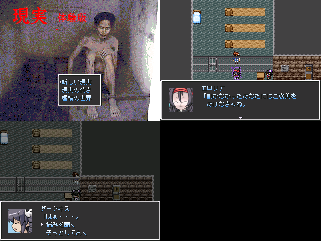

|
| |
 | |
| 【作者名】 | のーなーめ |
| 【作者コメント】 | SSの右下部分にあなたの顔を近付けてじっと見つめてください そこにぼんやりと浮かび上がったのがあなたのアバターです アバターはあなたの力量に合わせて最も扱いやすいように 作られています さて、アバターが決まったら冒険の旅に出ましょう 部屋の中を探せば出口と思しき扉が見つかるはずです その扉をくぐった先こそ、アバターの冒険の舞台です さあ！！アバターと一緒に広大な世界へ飛び出しましょう！！ (左と上の3つのSSはあくまで一例であり、現実とは異なる 場合がございます) |
| 【管理人コメント】 | 現実が体験版ならいいのに。 |
|
| |